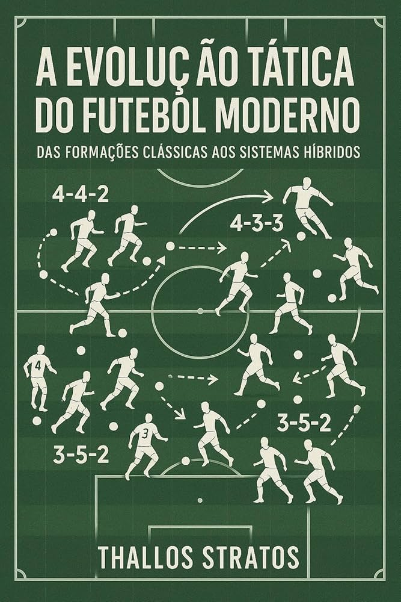

1. A Evolução Tática: Como o Futebol Mudou
Se você pegar uma máquina do tempo e assistir a um jogo de futebol dos anos 1970, vai achar que o vídeo está em câmera lenta. Antigamente, o craque recebia a bola, tomava um cafezinho, olhava para o lado e só aí decidia o que fazer. Hoje? Se o jogador piscar, três defensores já roubaram a bola e armaram um contra-ataque. A grande mudança no futebol moderno foi a intensidade e o espaço. O campo continua do mesmo tamanho, mas parece que encolheu. Com o famoso tiki-taka (aquele estilo de tocar a bola até tontear o adversário) e, mais recentemente, o sufocante Gegenpressing (perdeu a bola, corre atrás dela igual um maluco), o futebol virou um jogo de xadrez em alta velocidade. O jogador de hoje precisa ser um atleta olímpico e um estrategista ao mesmo tempo. 2. Grandes Rivalidades do Futebol Mundial Nada move mais o futebol do que o puro e simples drama de um clássico. Não estamos falando apenas de 22 jogadores correndo atrás de uma bola, estamos falando de famílias divididas no almoço de domingo e palpitações que desafiam a medicina. Pelo mundo, rivalidades como Real Madrid vs. Barcelona (o famoso El Clásico) ou Boca Juniors vs. River Plate param países inteiros. No Brasil, então, nem se fala: um Derby Paulista ou um Fla-Flu são capazes de mudar o humor de uma cidade por uma semana inteira. O mais curioso do design invisível do futebol é como as cores dos times rivais nunca se misturam bem no guarda-roupa de um torcedor fanático. É a pura psicologia das cores aplicada à paixão! 3. O Impacto da Tecnologia no Campo: O VAR e Além "Gooooool! Não, pera... deixa o juiz botar a mão na orelha." Essa frase se tornou o maior teste para o coração dos torcedores nos últimos anos. O VAR (Árbitro de Vídeo) chegou prometendo acabar com as injustiças, mas acabou criando um novo esporte: o "futebol de suspense", onde você comemora o gol duas vezes (uma na hora e outra três minutos depois, quando o telão confirma). Mas a tecnologia não para por aí. Hoje temos chips na bola, sensores de impedimento semiautomáticos que parecem saídos de um filme de ficção científica e inteligência artificial analisando o cansaço dos jogadores em tempo real. O futebol raiz que nos desculpe, mas a linha de fundo agora é pura linha de código. 4. Bastidores: A Rotina e a Preparação de um Atleta de Elite Se você acha que a vida de um jogador de futebol é só禁 treinar duas horinhas por dia e postar foto de carro novo no Instagram, temos um choque de realidade para te dar. A rotina de um atleta de elite está mais para um cientista focado em performance do que para um jovem curtindo a vida. A preparação começa na cozinha: cada grama de carboidrato é pesada, e o doce de leite é quase uma lenda urbana. Depois dos treinos intensos, eles entram em banheiras cheias de gelo (sim, crioterapia pura!) para recuperar os músculos. Ah, e lembra daquela história de ficar jogando videogame até as 3 da manhã? Esqueça. O sono deles é monitorado por relógios inteligentes para garantir que o corpo regenere 100%. É uma vida de luxo, mas que cobra cada centavo em suor e disciplina.